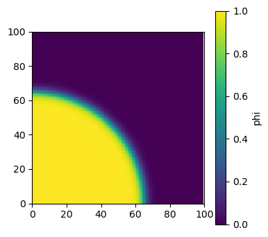
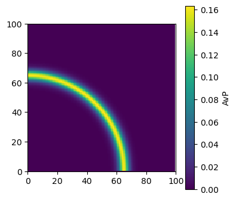
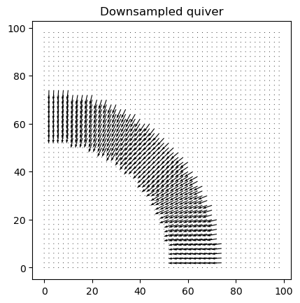
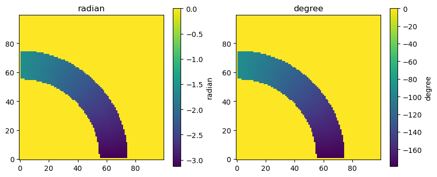

Quiver plot#
Here, we will do a quick demonstration of how to calculate surface orientations in phase field modeling.
Start with a given order parameter (field variable) distribution. Note that the order parameter takes a uniform value in a phase. The regions that the order parameter transitions from value to another are the interface regions.
import numpy as np
import matplotlib.pyplot as plt
# domain size
Lx = 100
Ly = 100
dx = 1.0
dst = np.zeros((Ly,Lx))
phi = np.zeros((Ly,Lx))
zeta = 3.0*dx;
# calculate the distabce funtion (to a given surface)
# using use a sigmoid function to create an initial order parameter fiedl
for rr in range(Ly):
for cc in range(Lx):
dst[rr,cc] = np.sqrt(rr**2 + cc**2)*dx
phi[rr,cc] = 0.5*(1.0 - np.tanh((dst[rr,cc]-65.0)/zeta))
# visualization
fig, ax = plt.subplots(figsize=(4, 4))
ax.set_aspect('equal', adjustable='box')
ax.set_xlim(0, Lx)
ax.set_ylim(0, Ly)
im = ax.imshow(phi, origin='lower', interpolation='nearest')
fig.colorbar(im, label='phi')
<matplotlib.colorbar.Colorbar at 0x198c7a990>

To determine the surface orientations, we will first calculate the gradient of the order parameter. A gradient of a scalar function is a vector. So, in the 2D case, the gradient will have a \(x\) and a \(y\) components.
The magnitude of the gradient vector is
We will use central difference method to compute the gradient:
Note that we use \(i\) and \(j\) for the row and column indices. Thus, \(i\) corresonds to the vertical direction (\(y\)) and \(j\) for the horizontal direction (\(x\)).
Note that the central difference method cannot calculate the gradient values on the box boundaries. Thus, we calculate only the values of interior points.
# use central difference method to compute gradient
grd = np.zeros((Ly,Lx,2))
# in the x direction, here we use index 0 for the x component
grd[1:-1,1:-1,0] = (phi[1:-1,2:] - phi[1:-1,0:-2])/(2*dx)
# in the x direction, here we use index 0 for the x component
grd[1:-1,1:-1,1] = (phi[2:,1:-1] - phi[0:-2,1:-1])/(2*dx)
In the bulk region, the gradient is zero. The only non-zero regions are on the interface. As a result, we shall set up a mask to calculate the surface normal only in the interfacial regions. We can define the interfacial regions as, for example:
plot the magnitude of \(\big| \nabla \phi \big|\).
# calculate the magnitude of the gradient
AvP = np.zeros((Ly,Lx))
AvP[1:-1,1:-1] = np.sqrt(grd[1:-1,1:-1,0]**2 + grd[1:-1,1:-1,1]**2)
# define a mask, below which the value is set tp be 0
mask = AvP[1:-1,1:-1] > 1e-3
AvP[1:-1,1:-1][~mask] = 0.0
# visualization
fig, ax = plt.subplots(figsize=(4, 4))
ax.set_aspect('equal', adjustable='box')
ax.set_xlim(0, Lx)
ax.set_ylim(0, Ly)
im = ax.imshow(AvP, origin='lower', interpolation='nearest')
fig.colorbar(im, label='AvP')
<matplotlib.colorbar.Colorbar at 0x198f2bb30>

Quiver plot of the gradient vector#
Let’s calculate the unit inward vector of the interface. The inward vectors point to \(\phi = 1\) from \(\phi=0\).
The unit inward vectors on a diffuse interface in the phase field model are calculated using
Plot the vectors, which indicate the locations of interface. In the quiver plot we need the arrays of the positions of the grid points.
# unit inward vector
nv_x = np.zeros((Ly,Lx))
nv_y = np.zeros((Ly,Lx))
nv_x[1:-1,1:-1][mask] = grd[1:-1,1:-1,0][mask]/AvP[1:-1,1:-1][mask]
nv_y[1:-1,1:-1][mask] = grd[1:-1,1:-1,1][mask]/AvP[1:-1,1:-1][mask]
# make a quiverplot for the vector
ny, nx = phi.shape
x = np.arange(nx)
y = np.arange(ny)
X, Y = np.meshgrid(x, y)
step = 2 # plot every 5th point
plt.quiver(
X[::step, ::step],
Y[::step, ::step],
nv_x[::step, ::step],
nv_y[::step, ::step],
color='k',
scale=25,
width=0.003,)
plt.gca().set_aspect('equal', adjustable='box')
plt.title('Downsampled quiver')
plt.show()

Surface orientation#
The surface orientation can be calculated using
We can use np.arctan2(\(n_y\),\(n_x\)) function.
Again, we only calculate the values in the interfacial region.
Plot the obtained surface orientation.
# surface orientation
# angle in radian
theta = np.zeros((Ly,Lx))
theta[1:-1,1:-1][mask] = np.arctan2(nv_y[1:-1,1:-1][mask],nv_x[1:-1,1:-1][mask])
# angle in degree
theta_d = np.zeros((theta.shape))
theta_d = theta/(2*np.pi)*360
# visualization
fig, axes = plt.subplots(1, 2, figsize=(10, 4)) # 1 row, 2 columns
# --- left plot ---
im0 = axes[0].imshow(theta, origin='lower', interpolation='nearest', cmap='viridis')
cbar0 = fig.colorbar(im0, ax=axes[0], label='radian')
axes[0].set_aspect('equal', adjustable='box')
axes[0].set_title('radian')
# --- right plot ---
im1 = axes[1].imshow(theta_d, origin='lower', interpolation='nearest', cmap='viridis')
cbar1 = fig.colorbar(im1, ax=axes[1], label='degree')
axes[1].set_aspect('equal', adjustable='box')
axes[1].set_title('degree')
Text(0.5, 1.0, 'degree')
